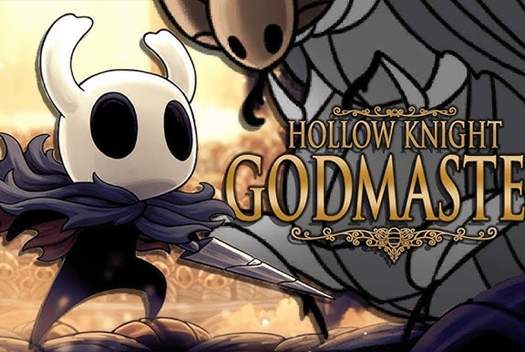

Dive into the adventure
Hollow Knight is a critically acclaimed action-adventure Metroidvania game developed by Team Cherry. Explore the vast and mysterious kingdom of Hallownest, an underground world full of secrets, strange creatures, and powerful bosses. With a challenging gameplay style, an immersive atmosphere, and intricate level design, Hollow Knight invites you to uncover a hidden story as you fight for survival in an environment filled with magic, traps, and puzzles to solve. Get ready for a unique experience that will test your skill and bravery.
NEW EXCLUSIVE CONTENT PACKS
The Dark Forest. Difficulty: High
One of the most difficult areas due to obstacles in the form of traps, challenging enemies, and demanding platforms.

The Grimm Troupe

Lifeblood is a major update to Hollow Knightoriginally planned for the release of the game on Nintendo Switch. It was pushed to public beta testing on March 23rd, 2018, with its name and content revealed on the 24th. Lifeblood was then released on April 20th, 2018. This update enhanced many technical and visual aspects of the game, balanced the gameplay, and added a boss fight with its own theme. A customizable theme, allowing players to change the background of the title screen. Visual Changes to the game such as using charms, locations, and new animations. Buffs and Nerfs to Combat, Enemies, and Bosses such as: Added two new attacks to the Traitor Lord. Hivelings appearance is larger and have increased health. A stagger can be performed on The Collector Hive Guardians deals two masks of damage to The Knight. Upon death, a Volatile Mosskin quickly explodes.
Godmaster
Godmaster is the last of the three ffree content packs planned for Hollow Knight . It was initially revealed as Gods and Glory along with its content on January 31st, 2018, but renamed to Godmaster on August 15th, 2018 due to a trademark conflict with the mobile game Gods and Glory published by Wargaming. It was released on August 23rd, 2018. This last content pack added an endgame quest and fighting challenges, several characters and secret areas, more Deicate Flower recipients and additional music, along with some remixes.